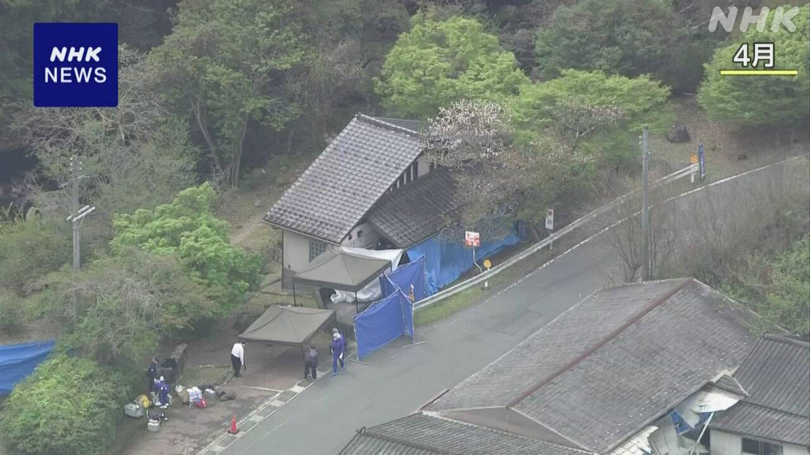

最新ニュース
1️⃣ 福島県 高校生が乗ったバスが事故 1人亡くなって20人けが
福島県であった交通事故のニュースです。
6日の朝、福島県郡山市の高速道路で、小さいバスが、ガードレールなどにぶつかって壊れました。
バスには、新潟県新潟市の高校の生徒たちが乗っていました。
この事故で、生徒1人が亡くなりました。そして、生徒と運転手の全部で20人がけがをしました。生徒たちは、ソフトテニスの試合に行くところでした。
警察が事故の原因を調べています。
バスはレンタカーでした。高校がバスの会社に頼みました。バスの会社は、レンタカーの店からバスを借りて、運転手も高校に紹介したと、話しています。
国土交通省は、会社と学校、運転手で、どういう話があったのかなどを調べています。
2️⃣ 京都府の事件 男の子を殺した疑いで父親を逮捕

先月、京都府南丹市の山の中で、亡くなった小学生の男の子が見つかった事件のニュースです。
警察は、男の子を殺した疑いで、6日、父親で南丹市の安達優季容疑者を逮捕しました。
警察によると、安達容疑者は3月23日の朝に、まちの中のトイレで、息子の結希さんの首をしめて殺した疑いがあります。
事件を調べている人によると、父親は、事件の日、車で息子を学校に送っていきました。そのとき息子が「本当の父親ではない」と言ったことに怒って殺したと、話しているようです。
3️⃣ クルーズ船で「ハンタウイルス」が広がる 3人が亡くなった
WHO＝世界保健機関は、大西洋にいるクルーズ船で、「ハンタウイルス」というウイルスが広がったと発表しました。
ハンタウイルスは、息が苦しくなって亡くなったりする重い病気などの原因になります。
船には、客など150人ぐらいが乗っていて、8人にウイルスがうつったか、うつった疑いがあります。この中で、客の夫婦など3人が亡くなりました。
WHOは、ハンタウイルスは、ねずみの尿などにさわるとうつると言っています。しかし、人から人にうつることは、ほとんどないと言っています。
4️⃣ 長野県天龍村 新茶の葉をとる作業が始まる
長野県天龍村では、たくさんのお茶を育てています。昼と夜の温度の差が大きくて、お茶を育てる場所によいからです。
1年で最初にとれるお茶を新茶といいます。今年は、5月2日から新茶の葉をとり始めました。2月の終わりの気温が高かったため、いつもの年より10日ぐらい早いです。
農家の人は「今年は味も香りもいちばんいいお茶ができました。ぜひ楽しんでください」と話しています。
お茶の葉をとる作業は、5月中ごろまで続くそうです。
- 〜など
- 〜ている / 〜でいる
- 〜ところ
- 〜から
- 〜がある / 〜がいる
- 〜中
- 〜によると
- 〜こと
- 〜ようだ / 〜みたいだ
- 〜という
- 〜になる
- 〜くらい / 〜ぐらい
- 〜ず / 〜ずに
- 〜しか〜ない
- 〜ため
- 〜より
- 〜てください / 〜でください
- 〜そうだ
- 〜まで
vebaev.github.io
Generated: 2026-05-07 11:49:22 UTC